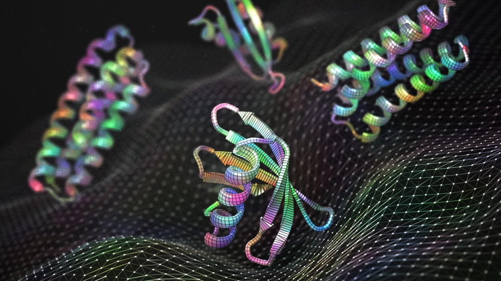
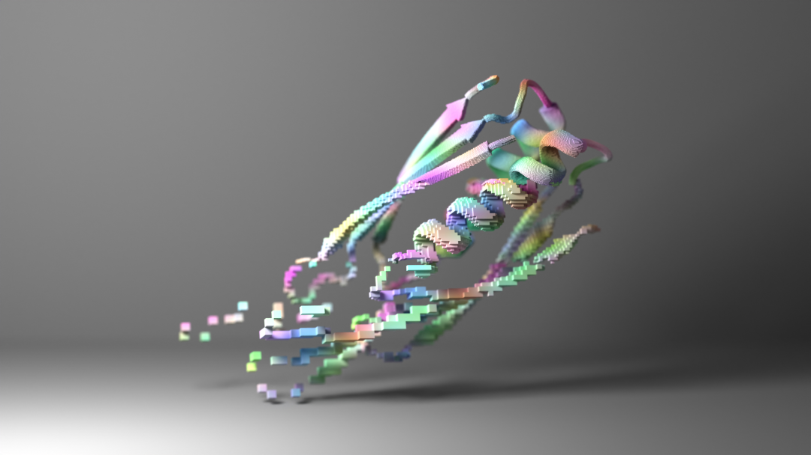
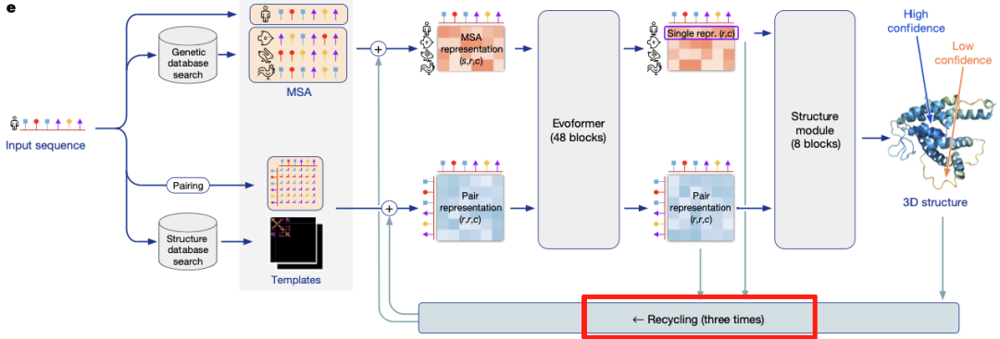
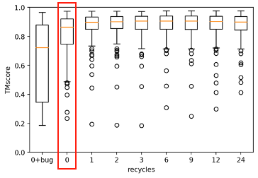

Hallucination Is All You Need? Protein Hallucination Design After BindCraft
Contents
"We want AI protein models to learn the underlying logic that goes beyond the folding rules of solved natural proteins, and to guide us in sampling biologically plausible regions of protein space that we have not yet explored."
Hallucination design is a generative approach to protein design that runs a structure prediction model backwards to design new sequences. Concretely: given a target protein structure (or a complex), you start from random sequences, repeatedly feed those sequences through a structure prediction module (AlphaFold2, RoseTTAFold), read out confidence metrics such as pLDDT and ipTM, and back-propagate on those metrics to optimise the sequence. Sequence and structure are co-designed this way, converging step by step on a binder with high predicted confidence that satisfies the design goal.
The method was first proposed by the Baker lab for generating monomers and symmetric assemblies (the 2022 Science paper on hallucinating symmetric protein assemblies), and in recent years it was extended to binder design. Unlike classical design built on physical energy functions, hallucination design needs no predefined fold scaffold. It explores sequence space using the "energy landscape" a trained deep model has already learned.

01 — What we mean by hallucination design
The background is the breakthrough in deep learning for structure prediction. Models such as AlphaFold2 and RoseTTAFold predict structures with very high accuracy, and the confidence distributions they output (pLDDT, pAE) can be read as a proxy objective for how well a sequence matches a structure. Researchers found that optimising gradients on those confidence metrics can "hallucinate" entirely new protein structures. Binder design builds on this: the metrics from the structure prediction module are combined into a loss function, and back-propagation generates sequences that bind a target. BindCraft, for instance, uses AlphaFold2 weights, feeds the target together with a random sequence, and keeps adjusting the sequence to minimise the loss. The practical consequence is that a designer can explore structure space directly inside the neural network, reaching novel binder sequences that template-based or docking-based pipelines struggle to cover.
02 — The main models
In practice, the leading hallucination-style binder design tools all use a pretrained deep structure predictor as both evaluator and optimiser.
ColabDesign is a collection of open-source pipelines from the Sergey Ovchinnikov lab supporting several design methods; its core module, AfDesign, is also the core of BindCraft. The platform contains P(structure | sequence) design modules (TrRosetta-Design, AfDesign and others) and P(sequence | structure) modules (ProteinMPNN). AfDesign implements AlphaFold2-based binder hallucination: the user supplies a target structure and a binder length, locally or on Google Colab, and the system iteratively optimises the sequence to satisfy the structural constraints. No retraining is required; gradients are computed through Alpha-Multimer weights.
"Wang Jue, the author of ColabDesign, did a number of interesting things to make AlphaFold2 support back-propagation; I will not go into them here for length. Because AlphaFold2 is built on JAX, ColabDesign is JAX too, which is a bit of a challenge for readers used to PyTorch. If you are curious, there are three detailed posts by Peldom on Zhihu, AI + protein design | gradient back-propagation through AlphaFold2."
BindCraft (Pacesa et al., 2024) is one of the representative systems that combined these pieces into high-quality designs, reporting success rates of 10–100%. The pipeline: take a target structure and a randomly initialised binder sequence, call AlphaFold-Multimer to predict the complex, read ipTM, pLDDT and pAE, take a weighted sum as the loss, and back-propagate into the binder sequence (one-hot encoded) to raise ipTM and pLDDT. No experimental data and no known binding site are required; everything comes from AlphaFold-Multimer's parameters. ProteinMPNN is used alongside to improve sequence manufacturability and diversity. The whole pipeline is automated: one design run produces hundreds of candidate sequences, which are then tested experimentally.

"Strictly speaking BindCraft is a hybrid: ColabDesign plus ProteinMPNN. You can think of it as using AlphaFold-Multimer back-propagation to co-design structure and sequence at the binder interface, then using ProteinMPNN to redesign the scaffold region away from the interface. If the wet-lab success rates (10–100%) hold up, separating interface design from scaffold design is a promising recipe for binders more generally."
Several other systems extend the same core. BindEnergyCraft (2025 preprint) reinterprets AF2 confidence as an energy model (pTMEnergy); changing nothing but the loss function measurably improves hallucination design and beats both BindCraft and RFdiffusion in vitro. FoldCraft adds an extra constraint (contact-map similarity) for scaffold-conditioned design, but has only been evaluated in silico with AF3, so its value is still open. Broadly, these methods share a modular shape: a structure predictor at the centre, several loss terms on top (prediction accuracy, interface affinity), and gradient or sampling search through sequence space.
Beyond AlphaFold2-based back-propagation, AlphaFold3 opened a second route. BoltzDesign1 (2025) is built on AlphaFold3 (via the open Boltz-1 implementation) and widens the design target to small molecules, nucleic acids, metals and modified proteins. Without any experimental optimisation, hallucination driven by Boltz-1 structure prediction produced binders with high predicted affinity for a range of ligands, including drug molecules, DNA, RNA, metal ions and covalently modified proteins. Experimental validation is still pending, but reported in-silico success rates exceed 90%.
03 — Where it gets used
Antibodies and nanobodies are one important setting. In work by Takafumi and others, AfDesign was used to redesign antibody CDR loops, optimising antigen binding affinity without a structural prior: given a known antigen–antibody complex, CDR sequences are generated at random and iteratively optimised, improving binding after substitution.

Peptides and cyclic peptides are another active area. Kosugi et al. (2022) used AfDesign binder hallucination to design peptides against an antibody–protein interface and added a solubility loss to control hydrophilicity; adjusting the loss weights kept affinity high while markedly improving solubility. Other work hallucinates cyclic peptides against protein–protein interaction interfaces, generating soluble binding peptides in a targeted way.
Allergens, cell receptors and similar targets are where BindCraft's own wet-lab validation lives. BindCraft was tested experimentally on a range of targets, including pollen allergens (designing binders that reduce IgE binding), Cas9 (modulating gene-editing activity) and bacterial enterotoxins (reducing cytotoxicity). BindCraft also developed AAV vector retargeting: designing binders that bind a specific cell-surface receptor redirects the viral vector to a chosen cell type. Binders, then, are not only inhibitors; they can also be delivery modules.
04 — How it compares
Against docking or template-driven methods, hallucination design differs in kind. Classical pipelines first screen or prepare a library of protein scaffolds (template libraries, random protein libraries), then use docking algorithms such as Rosetta Docking to evaluate binding modes and energies. That requires a great deal of prior information (a known binding site, or structures of similar binders), and because physical force fields and scoring functions are imperfect, you often have to design thousands or tens of thousands of candidates to find a few binders. The Rosetta design work from the Baker lab, for example, needed tens of millions of candidates across 13 target sites, and only a handful reached sub-micromolar affinity. Such methods adapt poorly: with no suitable template or library you cannot design a new structure at all, and the match to the binding-site shape has to be close. Hallucination needs no scaffold template and can create entirely new folds in sequence space, which makes design more flexible.
Against sequence-based methods (statistical co-evolution models, language model generation, and ProteinMPNN-style P(sequence | structure) predictors), the difference is that hallucination methods evaluate folding dynamically. Sequence-based approaches learn sequence statistics or predict a sequence for a given backbone, but they do not re-evaluate whether the result folds. Hallucination considers sequence and structure together and, at every iteration, predicts the complex and optimises against structural confidence. That makes it stronger at generation: it can explore folds outside known sequence and structure space, whereas sequence models tend to stay close to their training distribution.
Affinity prediction differs too. Docking methods use empirical force fields to compute binding energy; hallucination relies on confidence metrics from the structure predictor. Those metrics are approximations of structural quality, but they do reflect the network's confidence that a complex is feasible. On adaptability, hallucination design absorbs new loss terms easily (a solubility objective, say) and can use different strategies for different target types (protein, nucleic acid, small molecule). Classical methods usually need a workflow hand-tuned per target, whereas the deep learning approach is modular and iterates faster.
05 — Where hallucination design still struggles
One problem is design accuracy versus stability. Current methods optimise a prediction model's confidence, but experimental validation still finds mismatches and unstable structures. In Wicky et al.'s symmetric assembly hallucination work, many designs failed to express at all, which points at an overfitting risk: the network may generate sequences that are not stable in a biological system. Improving expressibility and foldability (through more constraints or extra losses) is a priority.
Another is model limits and generalisation. AlphaFold2 is powerful but depends on multiple sequence alignments, which may bias predictions for purely designed sequences; some work uses single-sequence AF2 or fine-tuned models to reduce that dependence. A third challenge is scope: hallucination today mostly targets protein–protein interfaces, and highly flexible targets remain difficult.


"Back-propagation requires dropping AlphaFold2's three recycles to zero, which costs some structure prediction accuracy and can feed through into design quality."
Looking forward: any in-silico design and optimisation ultimately has to come back to wet-lab validation. Pairing hallucination design with automated wet-lab loops (microfluidic high-throughput screening, machine-learned immunogenicity prediction) would accelerate the closed loop. As stronger structure predictors and better optimisers arrive, hallucination-style binder design should work through its current limitations and move toward more reliable rational drug design.
06 — A closing note
I have been an AIDD intern at XtalPi for four months now, and I am grateful to the colleagues who have looked after me. In this field, diffusion models, LLMs and GNNs are all doing their own spectacular thing, the architectures are broad and the iteration is fast, and keeping up feels like trying to shake a tree as an ant. I started this account to share what is happening in AI4Protein and to organise what I have learned so far. I am far from expert, so corrections are very welcome, and I am happy to argue about where the boundaries of AIDD actually are.
Originally published in Chinese on WeChat, August 14, 2025, as Hallucination Is All You Need？从BindCraft谈谈蛋白“幻觉设计”.
Translation and figures by Yitian Xiao. Corrections are welcome by opening an issue.